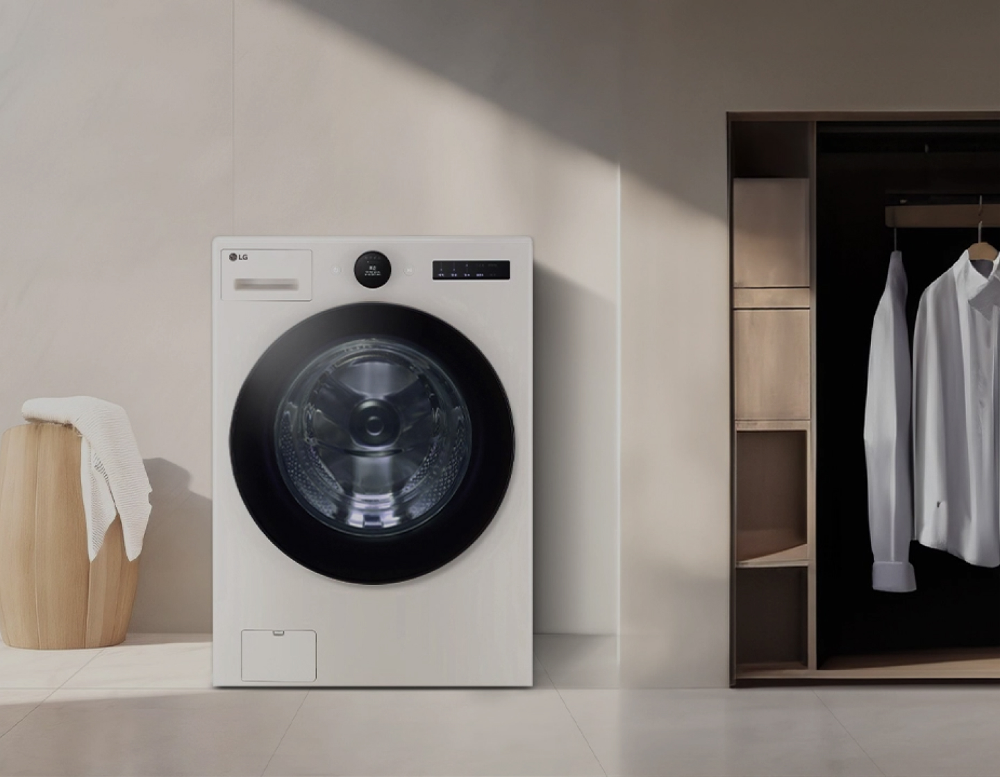
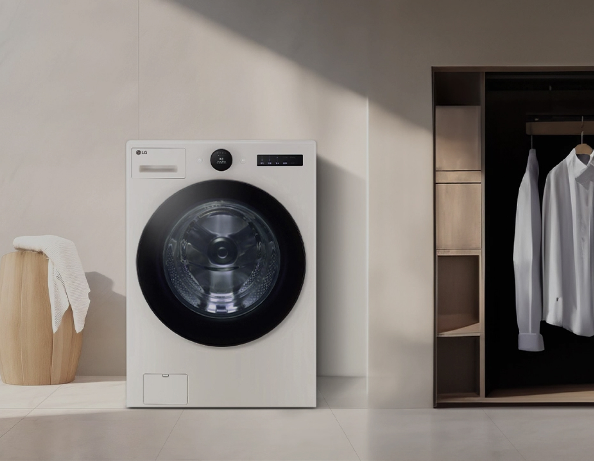
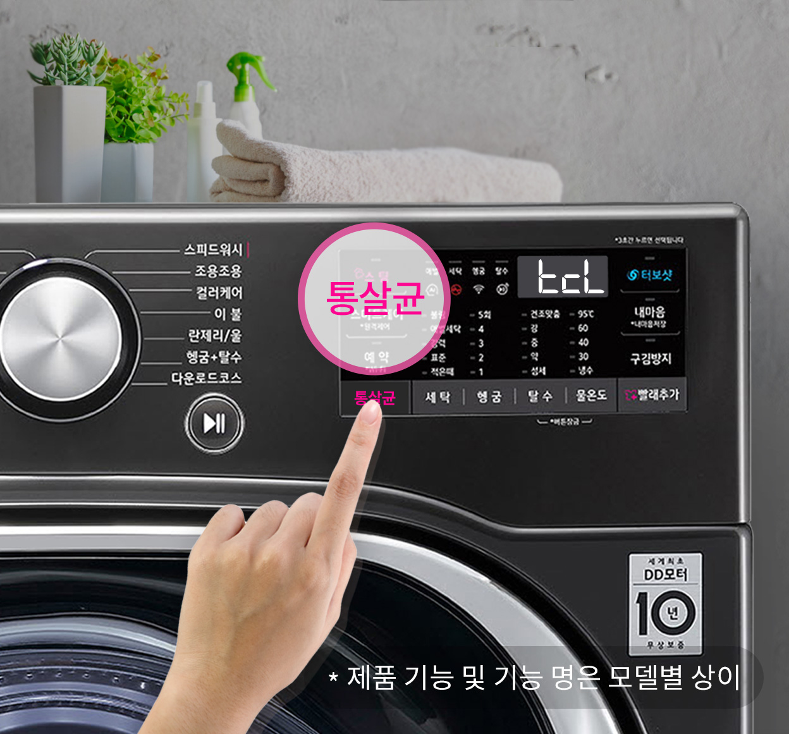

의류세탁기
 

보다 더 스마트한 일상
LG ThinQ의 시작

보다 더 스마트한 일상, LG ThinQ
씽큐는 사람과 가전을 AI 기술로 연결하여 더 편리하고 놀라운 일상을 만드는 LG전자의 스마트 홈 플랫폼입니다.
* 본 콘텐츠는 ThinQ 앱의 콘텐츠입니다.
한 번 사면 몇 년씩 쓰는 세탁기는 관리를 잘하면 더 오래,
더 깨끗하게 사용할 수 있어요.
그렇다면 관리는 어떻게 하는 게 좋을까요?
지금부터 세탁기 관리법을 총정리한 LG 세탁 스페셜 노하우를 알려드릴게요.
세탁기 이렇게 사용해 보세요!
3줄 핵심 요약
· 한 달에 한 번 통살균하기
· 섬유유연제는 정량만 사용하기
· 배수필터 청소하고 잔수 버리기

통살균은 기본
세탁기도 사용하다 보면 청소가 필요해요. '통살균' 코스는 클리너를 넣고 버튼만 누르면 고온, 스팀으로 청소되는 가장 쉽고 기본인 세탁기 관리법이에요.
통살균은 언제 하나요?
통살균은 세탁기를 30회 사용하면 통살균/통세청이 필요하다는 ThinQ 앱 알람이 오거나, 세탁기에 TCL 문구가 나타나면 진행하면 되는데요. 알람을 확인하기 어렵다면 한 달에 한 번 주기적으로 통살균을 해주세요
세탁조 클리너 사용하기
통세척을 할 때 주로 사용하는 것이 세탁조 클리너인데요. 검증되지 않은 방법으로 청소를 시도하면 제품에 이상이 생길 수 있답니다.
TV에 나온 것처럼 '베이킹 소다+과탄산소다+구연산'을 물에 함께 녹여 통세척을 한다면 과탄산소다와 구연산이 서로 반응해 이산화탄소가 발생하게 돼요. 이로 인해 세탁기 속 공기가 팽창하게 되고 여러 문제가 생길 수 있으니 반드시 세탁조 클리너로 세척해 주세요.
섬유유연제는 정량만 사용
여름철 세제 통에서 냄새가 나는 경우에는 세제 통을 열어보면 섬유유연제가 굳어 있거나 곰팡이가 피어 있기도 해요. 이 경우 섬유유연제 사용 습관과도 연관이 있어요.
섬유유연제를 쓰는데 왜 냄새가 나는 걸까요?
섬유유연제는 표면에 달라붙는 성질이 강하기 때문에 정량을 사용해야 적절히 헹궈지고 좋은 향기가 난답니다. 많이 넣어서 사용하는 경우 세탁기 내부에 달라붙고 나쁜 냄새를 유발하게 될 수 있어요.
그렇기 때문에 반드시 적정량만 사용하고, 투입 시에는 주변에 묻지 않도록 주의하며, 사용 후에는 통을 열어 말려주는 게 필요해요.
배수필터 이물질 제거하기
배수필터에 이물질이 있는 경우 냄새가 날 수 있으므로 월 1회 이상 청소가 필요해요.
필터 청소는 어떻게 하나요?
① 전면 하단부 서비스 커버를 열어주세요.
② 배수필터 캡 손잡이를 왼쪽으로 돌려 분리해 주세요.
③ 배수필터와 필터 내부를 청소용 브러쉬 또는 칫솔로 청소해 주세요.
④ 잔수까지 제거해 주면 더 좋아요!
주기적인 하수구 체크
위의 방법대로 관리를 했는데도 냄새가 난다면 하수구 냄새가 배수 호스를 통해 세탁기 내부로 들어온 것일 수 있으니 체크가 필요해요.
하수구는 어떻게 체크하나요?
배수 호스를 배수구에서 빼낸 뒤 세탁해 보세요. 세탁이 끝난 후 세탁기 문을 열어 냄새가 나지 않으면 하수구 냄새가 배수 호스를 타고 역류한 것일 수 있어요. 이때는 전문 업체를 이용하거나 하수구 청소제를 이용해 청소 해주세요.
건강처럼 기계도 꾸준한 관리를 해주면 더 깨끗한 빨래를 할 수 있어요.
소소한 습관들로 세탁기를 깨끗하게 오래 사용해보세요!


LG ThinQ
ThinQ 하나로 더 좋아지는 일상
일상을 더 편하고 스마트하게 만들어주는 씽큐 앱을 지금 바로 만나보세요.
- #세탁기
- #세탁기관리
- #통살균
- #세탁조
- #통세척
- #배수필터청소
- #세탁조클리너
- #섬유유연제
- #하수구체크
- #세척
출처 및 고지사항
고지사항
* 제품 기능 및 기능 명은 모델별 상이
* 통살균
- 인터텍 시험 결과, 자사가 제시한 기준으로 내외통 각 3곳 에 균을 배양한 미생물을 바른 후, 통살균 코스 시 황색포도 상구균, 녹농균, 폐렴간균 99.9% 제거됨
- 살균 효과는 사용 환경에 따라 차이가 있을 수 있습니다.
* 참고자료
- 세탁기 통 청소 방법이 어떻게 되나요, LG전자 서비스[웹 사이트]. (2015년 5월 6일) >
KBS NEWS[웹사이트]. (2016년 3월 16일) >